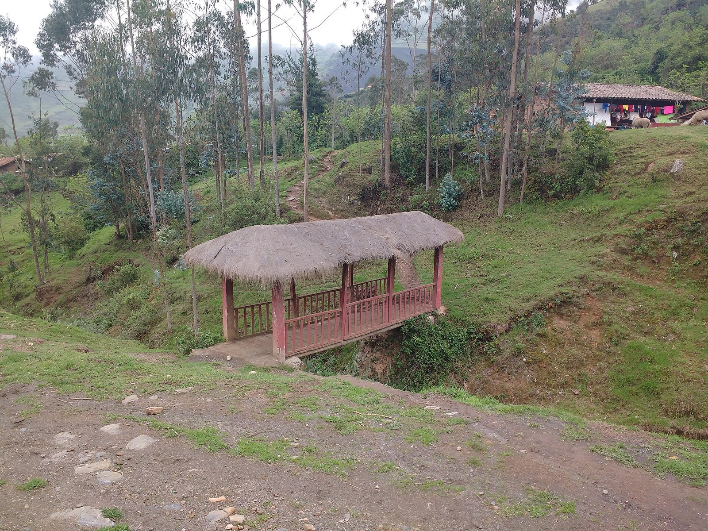
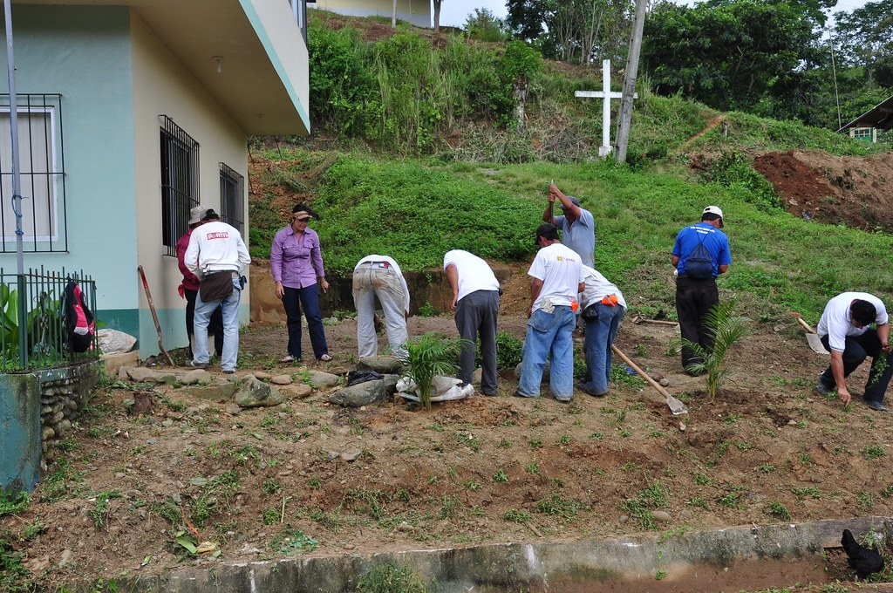
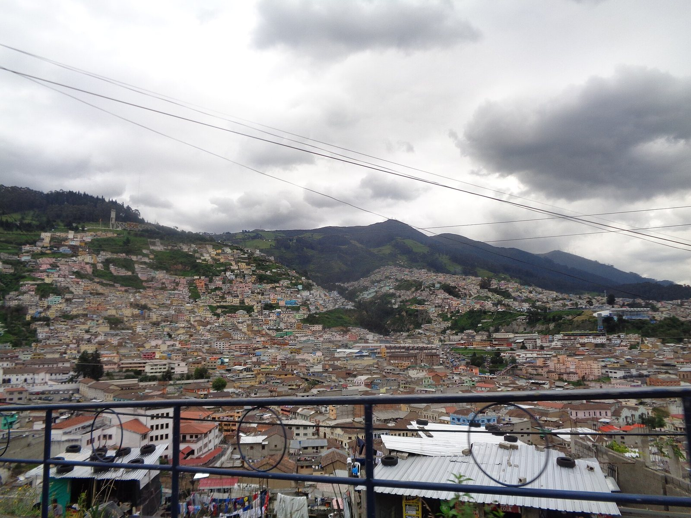
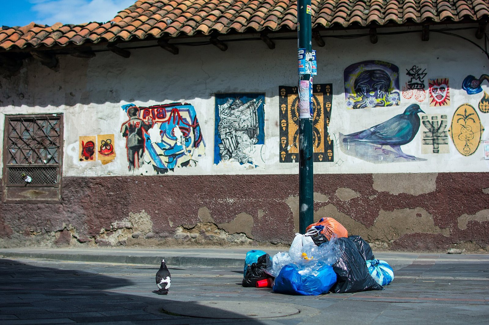
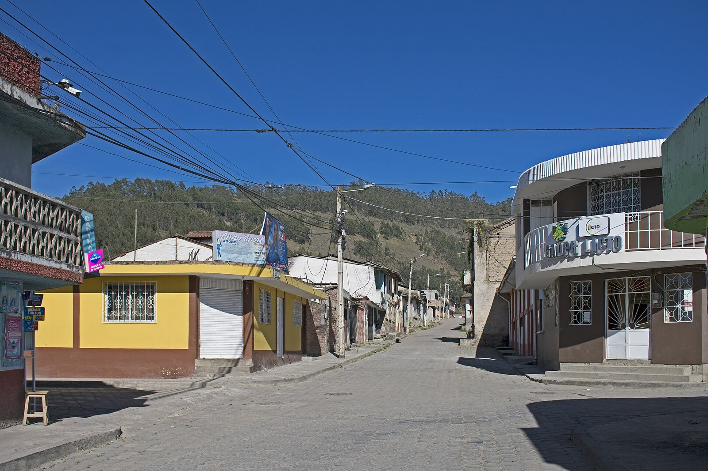
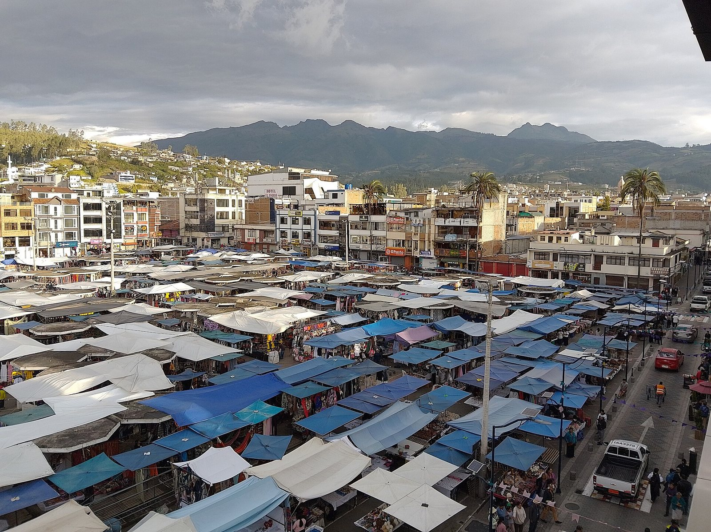
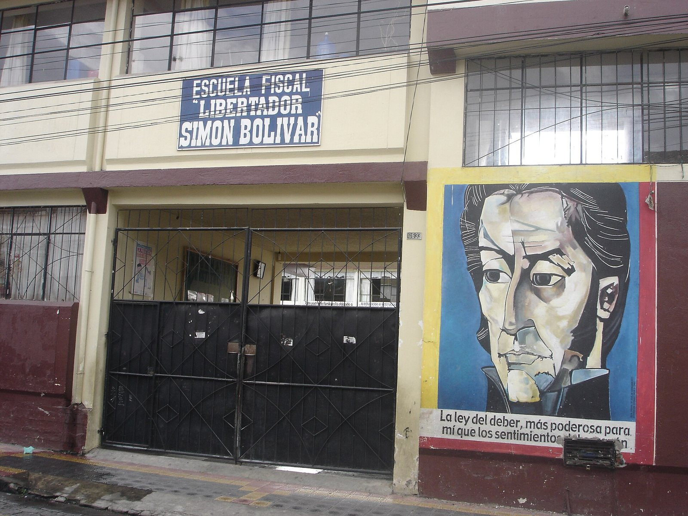

cuenta
Entrevista
Lo escribes como se lo contarías a un amigo. Te hace tres preguntas: dónde pasa y a cuántos afecta, desde cuándo, con cuántas personas cuentas. Sale la ficha del problema.
Puente peatonal en Chetilla

Cuenta el problema de tu barrio. Nueve agentes de IA lo vuelven un plan de seis semanas con tu gente.
Gratis. Sin clave de IA funciona en modo demo.
Llakta quiere decir pueblo en kichwa. Hecho en Ecuador para el NAU Fest, AI for Impact.
Contar mi problema
Entrevista
Lo escribes como se lo contarías a un amigo. Te hace tres preguntas: dónde pasa y a cuántos afecta, desde cuándo, con cuántas personas cuentas. Sale la ficha del problema.
Puente peatonal en Chetilla

Causas y Precedentes, a la vez
Por qué pasa, a quién le toca resolverlo y dónde ya se resolvió algo parecido. Lo que es estimación se dice; si no sabe el nombre de una entidad, la nombra por su función.
Calle Agoyán, Quito

Ideas y Abogado del diablo
Seis salidas, de la gratis a la ambiciosa. El abogado del diablo ataca cada una: qué puede salir mal, quién se opone, cuánto cuesta. Se queda la que resiste.
Centro de Cuenca

Estrategia
La idea que quedó se vuelve un plan de seis semanas: una meta que se puede medir, roles para cada persona y tareas semana por semana, ya puestas en un tablero.
Licto, Chimborazo

Oficio, Campaña y Convocatoria, a la vez
La carta formal a la autoridad, la página pública para juntar firmas y el mensaje para sumar vecinos, con un enlace y un QR para cada rol.
Feria de Otavalo
Entrevista te va a preguntar
Otros que llegan:
Así las pesó el Abogado del diablo para el puente caído del ejemplo, en modo demo. Costo en dólares y semanas hasta ver algo.

“Es lo que más mueve a la autoridad con lo que el barrio ya tiene: firmas, fotos y un pedido con fecha.”
El riesgo que vio: sin seguimiento, el oficio se archiva. Hay que pedir número de trámite y volver cada semana.
Quién se opone: funcionarios con otras prioridades.
Y lo que no tiró: el mapa vecinal entra como evidencia del oficio, así que se hacen las dos.
Todo en una sola página del proyecto, que tu equipo abre desde el celular. Así salió el ejemplo del puente de La Floresta.
Abrir el ejemplo completoFicha del problema
El puente peatonal del barrio La Floresta
Se cayó hace seis meses y los niños cruzan por la quebrada para ir a la escuela.
Supuestos a comprobar
Entrevista
El problema en limpio: qué pasa, a quién afecta, desde cuándo y qué se supone sin saberlo todavía.
Tareas 1 de 13 hechas
Estrategia y Coordinador
Trece tareas con semana y dueño. Cada quien ve las suyas y las marca desde el celular.
Oficio
Para: Dirección de Obras Públicas del Municipio
Asunto: Pedido de solución: el puente peatonal del barrio La Floresta
Quienes firmamos somos vecinas y vecinos de La Floresta. Adjuntamos un mapa con fotografías fechadas de cada punto afectado y el conteo de las personas perjudicadas.
Solicitamos, en un plazo de quince días hábiles, una respuesta escrita que indique qué entidad se hará cargo, qué solución se propone y en qué fecha se ejecutará. Pedimos también un número de trámite.
Atentamente,
Coordinación vecinal
Oficio
La carta formal para radicar, con plazo, pedido de número de trámite y lugar para las firmas.
Plan de 6 semanas
300 firmas y una respuesta escrita con fecha
Estrategia
Una meta que se puede medir y cinco roles, cada uno con para qué sirve y cuántas personas necesita.
Invitación
Te buscan para Difusión
Mover la campaña de firmas en redes y en la calle. El puente peatonal del barrio La Floresta.
llakta/i/dNTWPNH2lZiF
Convocatoria
Imprímelo y pégalo en la tienda, o mándalo al chat del barrio. Quien lo escanea entra directo a su rol y a sus tareas.
El puente peatonal del barrio La Floresta
Pedimos a la autoridad una respuesta con fecha. Tu firma suma.
1 de 300 firmas
Tu nombre Tu barrio Firmo el pedidoCampaña
Pública, sin cuenta, lista para compartir. Las firmas se suman al oficio. Ver la del ejemplo
Cuando algo cambia, lo escribes como te salga. Un agente con herramientas mueve tareas, abre lugares en el equipo y te dice cómo van. Prende cada frase para ver qué responde.
“Mateo no puede esta semana.”
Reasigné sus 2 tareas pendientes y abrí un lugar nuevo para Evidencia.
“Necesito a alguien para la radio.”
Abrí un lugar para Hablar con la radio. En Equipo está su enlace y su QR.
“Ya mapeamos el problema.”
«Fotografiar y mapear el problema» queda como hecha. Van 1 de 13 tareas.
“¿Cómo vamos?”
Semana 1 de 6. 1 de 13 tareas hechas, nada atrasado. Firmas: 1 de 300.
Te hará tres preguntas y luego verás a los nueve agentes trabajar en vivo. Sin clave de IA corre en modo demo; con una clave gratis de Gemini o Groq, u Ollama en tu compu, investiga de verdad.